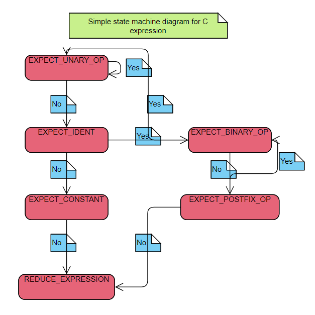

Writing a compiler can be challenging and fun. It's fun if you simply take it up as an exercise to learn about lexing,
parsing and code generation. Not so fun if you try to implement an actual general purpose language in all it's glory.
Check out this repo to see how I made a simple C compiler
https://github.com/RohitRTdev/simc
To keep this process enjoyable, we will only be building a C compiler that supports a subset of the language features.
For more info on the exact features implemented, please visit the repo. With that in mind, let's get onto it.
To write any compiler, we need to do 3 main tasks
- Lexing
- Parsing
- Evaluation and code-generation
To understand these 3 processes, let's first see what we are even trying to do. Whenever faced with a complex task, take a simple example first and see how the solution looks for that case alone, and then work on generalizing it.
Let's consider the code:
int a = b + c * d++ - *m;
How do we generate the code for this above statement. Before even answering this question,
we need to first ask ourselves what architecture do we want to generate code for.
I have decided to use the famous x64 / AMD64 architecture since it is the most widely used one in consumer PC's and laptops.
Now that we've decided the arch, let's see how the assembly for the code snippet above looks like.
x64 asm att syntax
//d++
movl -12(%rbp), %ebx //Load 'd'(assume it's stored at stack location rbp-12)
addl 1, -12(%rbp) //Increment 'd'
//c * d++
movl -8(%rbp), %eax //Load 'c'
imull %ebx, %eax // Signed multiply c * d++, now res0 = c * d++
//*m
movq -24(%rbp), %rbx //Load 'm'(We're loading into rbx since pointer is 8 bytes)
movl (%rbx), %ebx //Dereference pointer 'm', so res1 = *m
//sub res1 from res0
subl %eax, %ebx // Now res2 = res0 - res1
//b + res2
addl (%rbp), %ebx // This gives us the final result
//a = final_result
movl %ebx, -28(%rbp) //Store final result at 'a'
Variables b, c and d are assumed to be of type int and m is assumed to be of type int* .
Notice a few things here. First the variable's location. In C, variables are mostly stored in the stack, and it grows downwards in x64 arch.
This is not the case always though (variables could also be located in static memory or heap). Also notice the offsets at which the variables are stored. They are allocated in such a way that all the variables are aligned on their natural boundary( int variables are aligned on 4 byte boundaries and pointers are aligned on 8 byte boundaries).
Now that we've generated the code, let's see how to make our compiler do this. To perform this, what should we do first?
The compiler will only be given an input file, which contains a huge string.
We need to make sense of this string, i.e convert it into symbols that the C language understands.
This is where step 1 comes in, Lexing. In this step, we break the input set of characters into tokens that our compiler understands.
After lexing, we should generate a list of tokens from our input string
token1: Type:keyword, symbol:int
token2: Type:Identifier, symbol:'a'
token3: Type:Operator, symbol:'='
token4: Type:Identifier, symbol:'b'
token5: Type:Operator, symbol:'+'
token6: Type:Identifier, symbol:'c'
token7: Type:Operator, symbol:'*'
token8: Type:Identifier, symbol:'d'
token9: Type:Operator, symbol:'++'
token10: Type:Operator, symbol:'-'
token11: Type:Operator, symbol:'*
token12: Type:Identifier, symbol:'m'
All of the lexer code is included in the lexer.cpp file under src/simcc.
It simply iterates through the list of characters and tries to generate a token object.
This object is defined in token.h header file under include/compiler folder.
The logic to generate this is implemented using a simple lookahead parser. This means that
we need to atmost look one extra token to the right, before we can decide what the token is.
The lexer and the parser are implemented as state machines. Each state tells the lexer how to process
the current token and about how to reduce it (That is figure out what this token is).
C++
if(state == LEXER_START) {
sim_log_debug("In state LEXER_START. Searching for operator token.");
switch(ch) {
case ';': op = SEMICOLON; break;
case '{': op = CLB; break;
case '}': op = CRB; break;
case '~': op = BIT_NOT; break;
case '*': op = MUL; break;
case '/': op = DIV; break;
case '%': op = MODULO; break;
case '^': op = BIT_XOR; break;
case '(': op = LB; break;
case ')': op = RB; break;
case '[': op = LSB; break;
case ']': op = RSB; break;
case ',': op = COMMA; break;
case '!': {
state = EXTENDED_OPERATOR_TOKEN;
prev_op = NOT;
break;
}
case '+': {
state = EXTENDED_OPERATOR_TOKEN;
prev_op = PLUS;
break;
}
case '-': {
state = EXTENDED_OPERATOR_TOKEN;
prev_op = MINUS;
break;
}
case '&': {
state = EXTENDED_OPERATOR_TOKEN;
prev_op = AMPER;
break;
}
case '|': {
state = EXTENDED_OPERATOR_TOKEN;
prev_op = BIT_OR;
break;
}
case '<': {
state = EXTENDED_OPERATOR_TOKEN;
prev_op = LT;
break;
}
case '>': {
state = EXTENDED_OPERATOR_TOKEN;
prev_op = GT;
break;
}
case '=': {
state = EXTENDED_OPERATOR_TOKEN;
prev_op = EQUAL;
break;
}
default: {
state = LOOKAHEAD_FOR_CONSTANT;
}
}
}
The lexer starts at state LEXER_START. It checks if the given character(ch)
is an operator. Most of the operators can be determined using just one character such as '*'
or '~'. However, certain operators need further processing. This is why for certain other operators
we go to EXTENDED_OPERATOR_TOKEN state. This state terminates and goes back to LEXER_START
once it has determined the operator it is looking for by fetching the next character.
An example of such a character is '++'. When lexer fetches the first plus, it cannot immediately reduce that token, and can only do so
once it has determined the next character (If the next character is a '+', then it gets interpreted as '++' otherwise just a single '+').
Once a particular token is determined, a token object is generated. The token object is declared as follows.
C++
struct token {
private:
token_type type;
token_sub_type sub_type;
size_t position;
bool is_keyword_data_type() const;
public:
std::variant value;
template
token(token_type _type, const T& val) : type(_type) {
value = val;
position = global_token_pos - 1;
}
token(token_type _type, token_sub_type _sub_type, const std::string& num) {
type = CONSTANT;
sub_type = _sub_type;
value = num;
position = global_token_pos - 1;
}
token(token_type _type, const char& val) {
type = CONSTANT;
sub_type = TOK_CHAR;
value = val;
position = global_token_pos - 1;
}
}
This token class has been simplified and not all fields displayed in this are integral
to the conceptual understanding of the lexer. It is pretty self explanatory and stores information on
what type of token it is (KEYWORD, OPERATOR, LITERAL etc) along with the value of that token. For example,
if it is a string literal, then what is that literal.
Once all characters within the file are processed, the final token stream is passed on to the
parser stage.
Parsing involves taking the input stream we had earlier and producing an abstract syntax tree(ast).
The ast is a simple tree structure that tells the compiler in what order we must perform the operations listed.
Below picture shows the ast of the previous expression that our compiler generates.
A declaration list contains multiple comma separated declarations. A declaration contains a
declarator. A declarator could contain an identifier (it's optional since abstract declarators doesn't contain identifier).
Declarator's could also contain modifiers (such as pointer or array declarator). Our case is a very simple declarator that contains
only an identifier (In C parlance, this is called an unmodified type).
The definition that I gave above could also be condensed into a notation as follows.
Taken from msdn website
declarator:
pointeropt direct-declarator
direct-declarator:
identifier
( declarator )
direct-declarator [ constant-expressionopt ]
direct-declarator ( parameter-type-list )
direct-declarator ( identifier-listopt )
pointer:
* type-qualifier-listopt
* type-qualifier-listopt pointer
type-qualifier-list:
type-qualifier
type-qualifier-list type-qualifier
The above definition is what is known as grammar. Although this is only showing the grammar (structure)
of how declarations in C are laid out. Using this notation, we can describe all kinds of constructs within
that language. It consists of two tokens, terminal and non-terminal. Terminal tokens are those
which cannot be split further into simpler tokens. For example, type-qualifier (static, extern, auto, register) is a terminal token whereas
declarator is a non terminal token.
Parser design
You don't have to write a parser from scratch necessarily. There are tools such as bison, which will
generate files written in C that implements a state machine which will parse your grammar. You simply need
to give it the rules for your grammar, and it will generate the files for you.
However, simc uses it's own parser written from scratch. It is simply a state machine. State machines are
abstract structures that allow us to visualize the flow of the state of a machine given a set of inputs.
Each state is described by what kind of input it takes, and which state it proceeds to after getting that input.
Let us take a look at a state machine for parsing a C expression. For the sake of this tutorial, we'll proceed a simplified
form of the C expression. The grammar for it is as follows.
Simplified expression grammar for C
<expr> ::= <expr> binary_operator <expr>
<expr> ::= <expr> postfix_operator
<expr> ::= unary_operator <expr>
<expr> ::= identifier
<expr> ::= constant
Let's try parsing expressions with the above grammar. Our parser uses states which has only 2 pathways.
Yes/No. Each state has a yes token. If the state machine finds that the current token is equal to the
yes token, then we proceed to a given state, otherwise we proceed to the next state. The point to be noted
here is that, we could have designed a state machine where a given state could have proceeded into more that 2 states
but we chose to restrict it to just 2 states. The reason for this design will be clear in a second.
Let's take a look at a simple state machine that parses this table

We start out by fetching tokens one by one from our token stream. Our start state in this case will be set to EXPECT_UNARY_OP.
For each token, our parser checks if the token happens to be what the state mentions. If it is that token, then we go to the yes state.
If it's any other token we proceed to the no state. This means that if the first token is a unary operator, then we proceed to state
EXPECT_UNARY_OP, otherwise we proceed to state EXPECT_IDENT.
Within our parser, we define states like so
C++
static void parse_expr() {
//At start of expression
parser.define_shift_state("EXPECT_EXPR_UOP", EXPECT_EXPR_UOP, &token::is_unary_operator, EXPECT_EXPR_VAR, create_ast_unary_op);
parser.define_shift_state("EXPECT_EXPR_VAR", EXPECT_EXPR_POP, &token::is_identifier, EXPECT_EXPR_CON, create_ast_expr_var);
parser.define_shift_state("EXPECT_EXPR_CON", EXPECT_EXPR_POP, &token::is_constant, EXPECT_EXPR_LB, create_ast_expr_con);
parser.define_shift_state("EXPECT_EXPR_LB", EXPECT_EXPR_UOP_S, &token::is_operator_lb, EXPECT_EXPR_RB, create_ast_punctuator, nullptr, LB_EXPR_REDUCE);
//After an expression
parser.define_state("EXPECT_EXPR_POP", EXPECT_EXPR_POP, &token::is_postfix_operator, EXPECT_EXPR_BOP, false, reduce_expr_postfix);
parser.define_state("EXPECT_EXPR_BOP", EXPECT_EXPR_UOP_S, &token::is_binary_operator, EXPECT_EXPR_FN_LB, false, reduce_expr_bop);
parser.define_shift_state("EXPECT_EXPR_FN_LB", EXPECT_EXPR_UOP_S, &token::is_operator_lb, EXPECT_EXPR_LSB, create_ast_punctuator, nullptr, FN_CALL_EXPR_REDUCE);
parser.define_shift_state("EXPECT_EXPR_LSB", EXPECT_EXPR_UOP_S, &token::is_operator_lsb, EXPECT_EXPR_RB, create_ast_punctuator, nullptr, ARRAY_SUBSCRIPT_REDUCE);
//Terminal components in an expression
parser.define_special_state("EXPECT_EXPR_RB", &token::is_operator_rb, reduce_expr_rb, EXPECT_EXPR_RSB);
parser.define_special_state("EXPECT_EXPR_RSB", &token::is_operator_rsb, reduce_expr_rsb, EXPECT_EXPR_SC);
parser.define_special_state("EXPECT_EXPR_SC", &token::is_operator_sc, reduce_expr_stmt, PARSER_ERROR,
"Expected expression to terminate with ')' or ',' or ';'");
//States that start an expression but appear after an existing expression
parser.define_shift_state("EXPECT_EXPR_UOP_S", EXPECT_EXPR_UOP_S, &token::is_unary_operator, EXPECT_EXPR_VAR_S, create_ast_unary_op);
parser.define_shift_state("EXPECT_EXPR_VAR_S", EXPECT_EXPR_POP, &token::is_identifier, EXPECT_EXPR_CON_S, create_ast_expr_var);
parser.define_shift_state("EXPECT_EXPR_CON_S", EXPECT_EXPR_POP, &token::is_constant, EXPECT_EXPR_LB_S, create_ast_expr_con);
parser.define_shift_state("EXPECT_EXPR_LB_S", EXPECT_EXPR_UOP_S, &token::is_operator_lb, EXPECT_EXPR_FN_RB_S, create_ast_punctuator, nullptr, LB_EXPR_REDUCE);
parser.define_state("EXPECT_EXPR_FN_RB_S", EXPECT_EXPR_POP, &token::is_operator_rb, PARSER_ERROR, false, reduce_expr_empty_fn,
"Expected unary op, var, constant, '(' for start of expression");
}
The define_*_state functions will internally create a state object and will include it to the state machine. When the state machine is started it goes through
each of these states. The code shown above implements the state machine for a complete C expression, so you may see states that we didn't show in the picture.
Now let's discuss about how the parser actually generates the ast.
The state machine includes a stack object which we call the parser stack. When we hit the yes condition in a state, it does one of three things.
- Shift -> Push the token into stack
- Reduce -> Call a reduce function, which will combine the tokens in the stack
- Pass -> This will do neither of the above, and simply proceed to the next state
This is why we have many different types of define_functions declared in our code. Each one will tell how our state must react to a
yes condition.
The
reduce function is different for different states. If the state hits the
no condition, then it simply proceeds to the
no state.
When we walk through the states, we follow these additional rules.
Note: This is only valid for expression parsing.
- If we hit yes condition for EXPECT_BINARY_OP, we invoke binary_op_reduction
- If we hit yes condition for EXPECT_POSTFIX_OP, we invoke postfix_op_reduction
- If we hit REDUCE_EXPRESSION state, we invoke expr_reduction
For each of these reductions, we fetch a token from the top of the
parser stack and perform an operation depending on the reduction type and
the type of the token we're dealing with. From here on we'll refer to the token we fetched from the token stream as
cur_token and the token we fetched
from the
parser stack as
parser_token.
binary_op_reduction:
Rule 1) If parser_token is not an operator, we don't do anything and simply fetch the next parser_token.
Rule 2) If parser_token is an operator, and it has lower priority than cur_token, then we stop our reduction, shift the cur_token and continue with the next state.
Rule 3) If parser_token is an operator, and it has higher priority than cur_token, then we invoke the combination rule for that operator according to rule 7-8, and then continue with the next parser_token.
Rule 4) If parser_token is an operator, and it has the same priority as cur_token, then we invoke rule 5 or rule 6.
Rule 5) If parser_token has LHS associativity, we combine the operator according to rule 7-8, and then continue with the next parser_token.
Rule 6) If parser_token has RHS associativity, then we stop our reduction, shift the cur_token and continue with the next state.
Rule 7) If we find a binary operator, then we create an ast node with the root of the node being the operator and left and right nodes of it being the nodes below and above it in the parser stack respectively. Push the newly created ast onto the stack.
Rule 8) If we find a unary operator, then we create an ast node with the root of the node being the operator and it's child node being the node above it in the parser stack. Push the newly created ast onto the stack.
Rule 9) If we hit the end of the stack, we stop reduction, shift the cur_token and continue with the next state.
postfix_op_reduction:
Create an ast node with the root being the postfix operator, and it's child being the top node on the parser stack.
Then push the ast onto the parser stack.
expr_reduction:
For each parser_token in parser stack:
if parser_token is binary_operator:
Reduce according to rule 7
if parser_token is unary_operator:
Reduce according to rule 8
When done with expr_reduction, we should only be left with one node in the parser stack. This node should represent the ast for our expression. All
the code for the parser can be found under parser.cpp and the state-machine logic is implemented in state-machine.cpp.